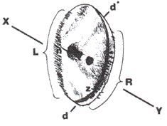

|  |
|
Fig. 2. Drawing of fine surface details based on original negative. |
Referring to Figure 2, the left-hand edge (L) consists of dozens of thin, parallel fingers of light that originate in the "body" of the object and fade off into the background luminance. The tips of these fingers end approximately along a curved line that corresponds to the oval shaped outline of the disc's form. The right-hand edge (R) possesses a much more regular (smooth) contour than the left but also possesses many very short jagged lines of light, each of which is oriented in the same direction as the longer fingers discussed above. The line labelled X-Y is the orientation of all of this microstructure just described. There are even some very short jagged lines with this orientation found along the inner edge labeled (z).
Three other details having this same orientation are also of note. They are (a) the upper and lower edges of the disc labelled (d') and (d), respectively, (b) a relatively long, thin, dark line that originates at the central dark region, which is labelled (n), and (c) the alignment of the two dark regions near the middle of the disc. We have no clear understanding of the origin or meaning of this oblique orientation effect seen in so many of its surface details.
On the basis of a very careful examination of the preceding and following frame, under different levels of magnification, it is clear that a second image of this aerial disc is not present in either one (unless it is concealed behind a dense cloud). Therefore, it must have flown into and then out of the field of view of frame 300 within a 20 seconds period of time or otherwise become invisible. Assuming that the object did not simply disappear, but travelled in a straight line, it is possible to calculate its maximum speed of travel. Assuming that the disc flew along a straight west to east path at ground level, it would have had to travel at about 1,988 miles per hour to traverse the entire distance from its current image location on frame 300 to just beyond the eastern edge of frame 299 (a distance equivalent to 11.04 miles). Likewise,